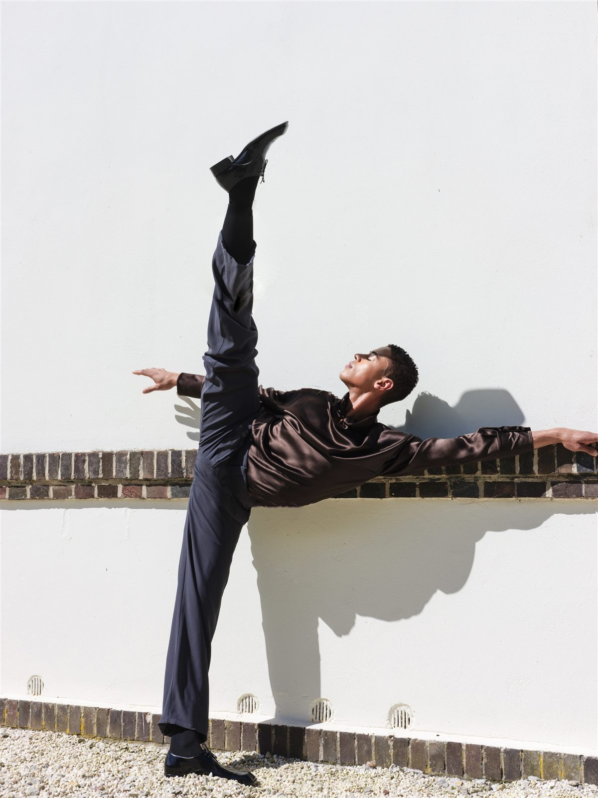
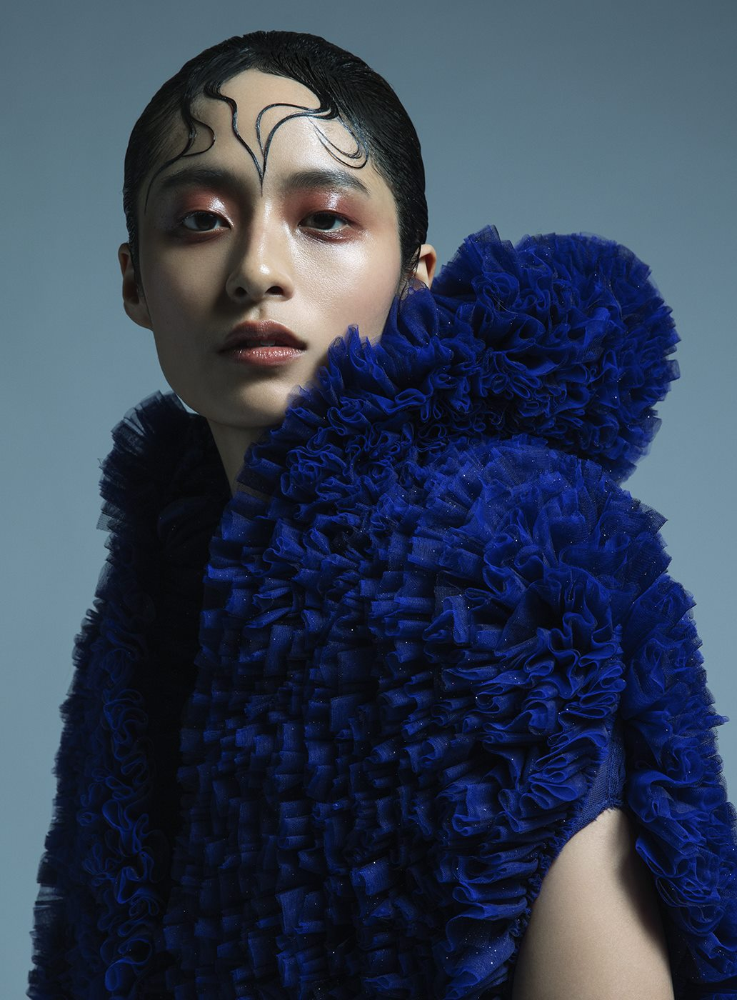
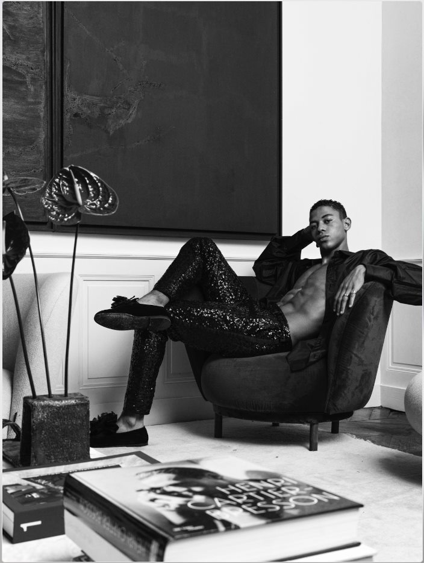
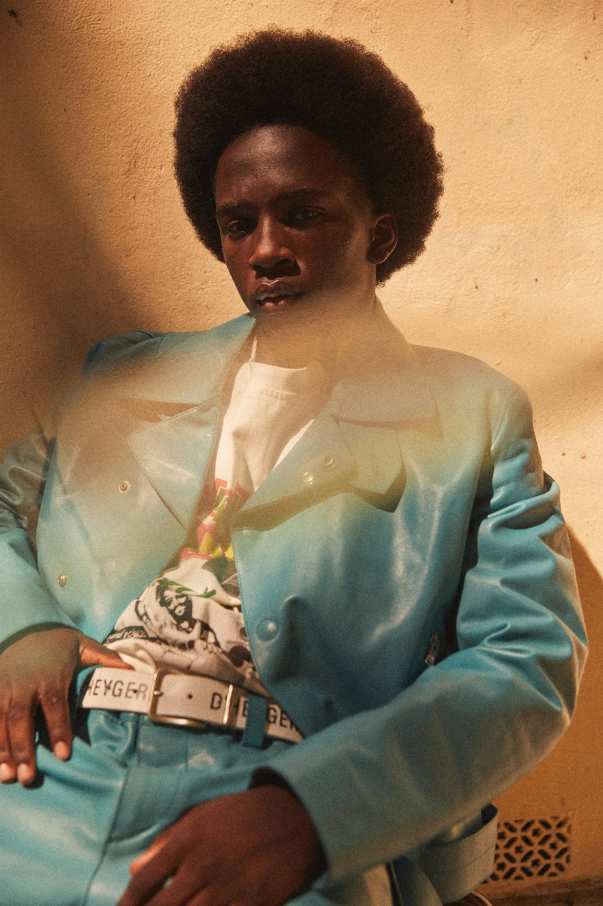
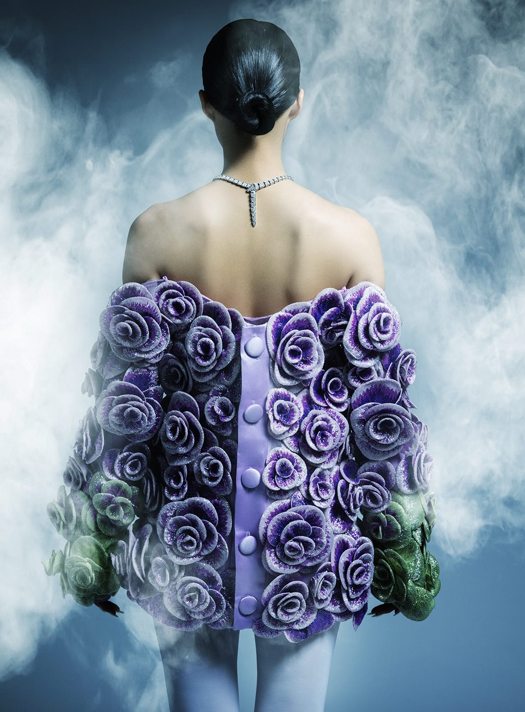

About
Wilow Diallo - Fashion Stylist/Editor

I grew up between cultures, between languages, between ways of seeing. That liminal space is where I find my energy as a stylist.
Fashion, for me, is never just clothes. It is identity made visible. It is storytelling without words. And my story has always been shaped by two forces: the precision of Parisian elegance and the warmth, rhythm, and texture of African creativity.
I discovered styling almost by accident, while experimenting with photography. I realized I was less interested in capturing images than in constructing them - in deciding what a person wears, how they stand, what they suggest. The garment became my language.
Today, I work with houses like Dior, Jacquemus, and Dolce & Gabbana, and with publications including HTSI. But what drives me is the same thing that drove me at the beginning: the belief that style is not about following. It is about arriving somewhere no one expected.
I am particularly committed to championing African fashion and emerging talents on a global stage. Not as a trend, but as a continuous conversation.
Based in Paris. Working everywhere.
Moodboard
Texture, proportion, atmosphere, and process




Style is not about following. It is about arriving somewhere no one expected.